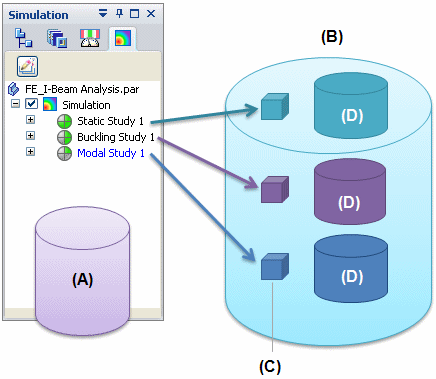

FEA architecture and files
In the simplest terms, Solid Edge Simulation and the NX Nastran solver process the model geometry and study data. They generate analysis data and a meshed model that are stored in a container called an analysis file.
FEA file structure
The FEA file structure is shown in the following illustration:

-
A single Solid Edge part, sheet metal, or assembly model file (A) may have a number of studies defined in it. Each study captures the following information:
-
Study name and type, to uniquely identify the study
-
Geometry and material
-
Loads, constraints, and connectors
-
Mesh type and sizing
-
NX Nastran processing options
-
Properties, such as Up To Date, Out Of Date, Visible or Hidden, Active or Inactive
-
Data pertaining to the analysis file out-of-date check.
-
-
A structured Solid Edge Simulation analysis file (B) is generated in the same location as the model file. It shares the model file name, with a .ssd file extension.
Each study defined in the model produces corresponding data in the analysis file. This includes custom data (C) and study data (D), which can be converted to a Femap .modfem executable file.
-
The custom data (C) includes variable information:
-
Applied physical mesh
-
Analysis results.
-
The combined content (C) (D) of the analysis file enables Solid Edge Simulation to open the analysis data for review outside of Femap, making it faster to display and review the results.
See Save a study to Femap to learn how to generate a Femap .modfem executable file.
Analysis file size
Analysis files, which contain the meshed model and results data, can become large very quickly. You should have sufficient disk space available in the location of the Solid Edge model document, where the corresponding analysis file is generated.
FEA file types
These file name extensions are associated with FEA in Solid Edge Simulation:
-
.ssd: The Solid Edge Simulation analysis file.
-
.modfem: Contains the model and analysis results for display in Femap.
-
.rcf: The default .rcf file (SENastran*.rcf) is provided with the setup. This file is written to the same location as the NX Nastran .dat file, which is a local .rcf file generated for each study.
To learn more about .rcf files: NX Nastran processing options.
Analysis files in the Teamcenter-managed environment
When you use Solid Edge Simulation in a Teamcenter-managed environment:
-
The .ssd file is saved to the same Dataset as the model.
-
In Teamcenter, the .ssd file is saved in Named References.
-
The analysis file (.ssd) is uploaded to Teamcenter using the Upload.ssd command, or downloaded from Teamcenter using the Download.ssd command. The commands are located in the Simulation tab→Teamcenter group.
-
The Upload dialog box displays a mesh icon in the Type column to the right of the document type. The icon indicates the .ssd file is being uploaded with the model. The time required to upload the files can be impacted by the size of the analysis file.
-
You can use settings in the Solid Edge Options→Manage→General tab to determine the default behavior when you save managed documents with Solid Edge Simulation results (.ssd).
-
The Open Options pane of the Open File and Download dialog boxes gives you the override option to Download Simulation results file (*.ssd).
-
The Cache Assistant dialog box displays a mesh icon to the right of the document type. The icon indicates a Solid Edge Simulation results (.ssd) file is associated with the model.
-
The Revise and Save As commands do not include the Solid Edge Simulation analysis file (.ssd) file.
-
You cannot use the Binder command on an analysis file.